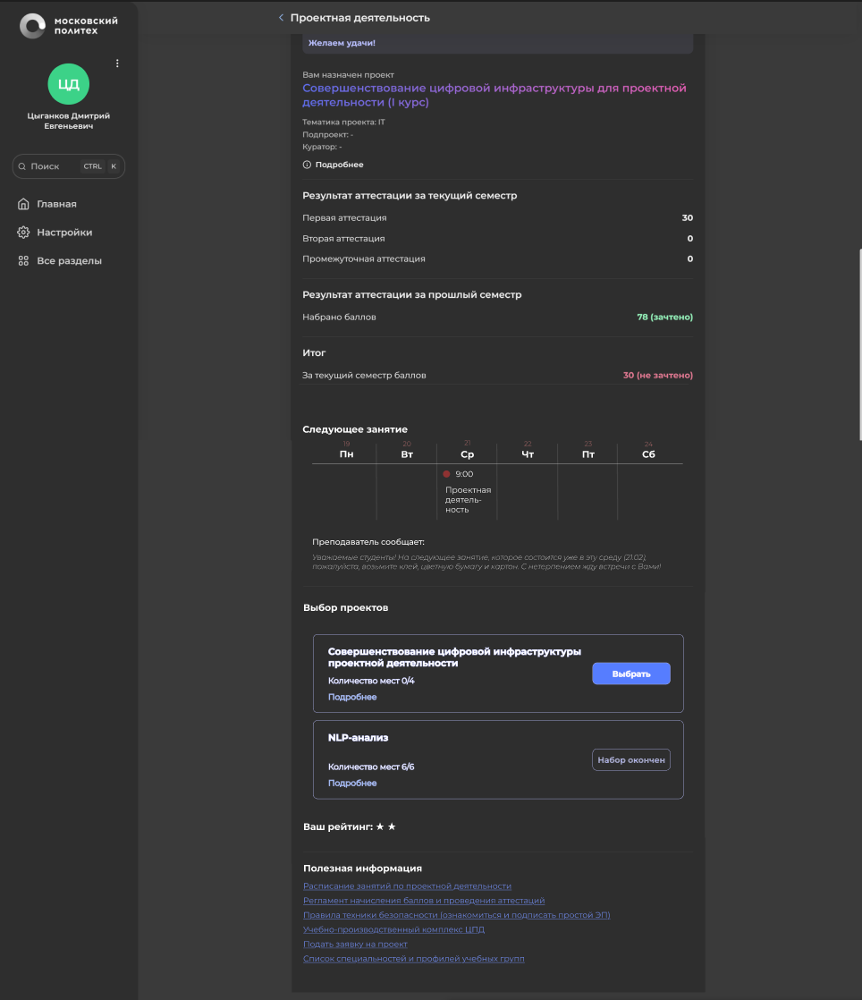

Аннотация проекта
Каждый год в Московский Политех поступают новые студенты, и у них начинается дисциплина “Проектная деятельность”. Для неё им нужно выбрать проект, которым они будут заниматься в течение семестра. В то же время, те люди, которые уже занимаются конкретным проектом, стремятся подобрать людей, имеющих нужные им навыки, причём потребность в студентах с различными навыками может меняться с течением времени. Поэтому важно, чтобы сервисы проектной деятельности отвечали меняющимся потребностям и помогали этим двум группам людей найти друг друга.
Данный проект направлен на усовершенствование раздела проектной деятельности для личных кабинетов студента и преподавателя, добавление нового функционала и упрощение уже существующих механизмов работы системы
